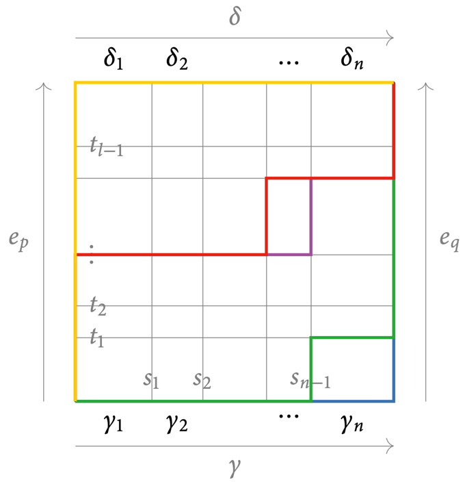
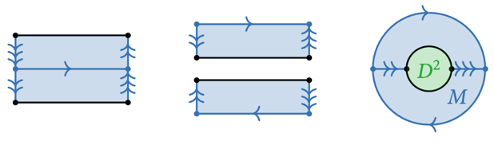
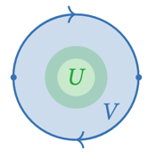

10 The Seifert-Van Kampen Theorem
The fundamental groupoid of a union
Theorem 10.1
Seifert-Van Kampen theorem, groupoid version
Let \(X\) be a topological space, and \(\{U,V\}\) be an open cover. The commutative diagram
induced by the inclusions of \(U\cap V\) into \(U\) and \(V\) and into \(X\) is a pushout diagram.
Proof
For a groupoid \(G\), we need a unique morphism \(f : \Pi(X) \to G\) making the diagram commute:
- Define the functor \(f\) at the level of objects
- Define the functor \(f\) at the level of morphisms (homotopy classes of paths in \(X\))
- Show that every path oin \(X\) is a concatenation of paths in \(U\) or \(V\)
- Show that \(f\) is well-defined, independent of the choice of path.
For the two triangles to commute, we must have
If \(x \in U\cap V\), then by the commutativity of the outer square, we have that \(f_U(x) = f_V(x)\), so it is well-defined.
Consider the morphism \([\gamma]\) represented by the path \(\gamma : [0, 1] \to X, p \leadsto q\).
If \(\gamma\) is a path entirely in \(U\), define \(f([\gamma]) = f_U([\gamma])\). Similarly for \(V\).
Now, if \(\gamma = \gamma_1 * \dots * \gamma_n\) is a concatenation of paths in \(U\) or \(V\), define \(f([\gamma]) = f([\gamma_n]) \circ \cdots \circ f([\gamma_1])\) to ensure functoriality of \(f\).
Let \(\gamma\) be a path in \(X\). Then, \(\gamma^{-1}(U), \gamma^{-1}(V)\) are open in \([0, 1]\). Thus, they are unions of open intervals. Since \([0, 1]\) is compact, we can find a finite subcover. Now, choose
in the pairwise intersections of this finite open cover. Then we have that \(\gamma|_{[s_{i-1}, s_i]}\) is entirely in \(U\) or \(V\). Now, reparametrize \(\gamma|_{[s_{i-1}, s_i]}\) to get the path \(\gamma_i\). Then, we have
which is a concatenation of paths lying entirely in \(U\) or \(V\).
Assume \([\gamma] = [\delta]\). Observe that
- if \(\gamma_i \sim \gamma_i'\) is path-homotopic in \(U\) of \(V\), then \(f([\gamma_i]) = f([\gamma_i'])\).
- if both \(\gamma_i, \gamma_{i+1}\) map entorely into \(U\) or \(V\), then by functoriality of \(f_V, f_U\), we have that \(f([\gamma_i*\gamma_{i+1}]) = f([\gamma_{i+1}]) \circ f([\gamma_i])\).
Let \(H : [0, 1]^2 \to X\) be a path homotopy from \(\gamma\) to \(\delta\).

By compactness of \([0, 1]^2\), we can find
such that \(H|_{[s_{i-1}, s_i]\times [t_{j-1}, t_j]}\) lies entirely in \(U\) or \(V\). This yields a decomposition of paths
So by yinduction, we get
Remark 10.2
Recall the universal property of apushout: If \(G\) is another groupoid together with morphisms making the outer diagram commute:
Then, there is a unique morphism \(\Pi(X)\to G\) making the diagram commute.
Remark 10.3
Note that \(X = U \cup V\) is the pushout of the inclusions \(U\cap V \hookrightarrow U, V\):
So the Seifert-Van Kampen theorem says that \(\Pi(-)\) sends pushouts of open inclusions to pushouts of groupoids.
Remark 10.4
We do not have a simple explicit construction for a pushout of groupoids. Thus, the theorem is easy to state but not easy to compute.
There is a version for the fundamental group, which is more restrictive but very explicit.
Theorem 10.5
Seifert-Van Kampen theorem, group version
Let \(X\) be a topological space, and \(\{U,V\}\) be an open cover. Assume that \(U\cap V\) is path-connected.
Now, let \(x \in U\cap V\). Then, the commutative diagram
induced by the inclusion of \(U\cap V\) into \(U\) and \(V\) and into \(X\) is a pushout diagram.
Proof
Let \(x, X'\) be as in L.10.20. Further, let \(U' := U\cap X', V' := V\cap X'\).
Claim: \(x\) meets every path-component of \(U', V', U'\cap V'\)
\(U \cap V\) is path-connected, so \(U' \cap V' = U \cap V \cap X' = U \cap V\).
By L.10.20, \(U', V'\) are path-connected, so \(x\) meets every path-components of \(U', V', U'\cap V'\).
Now, let \(A = \{x\}\). By T.10.19, we have a pushout diagram of groupoids
In particular, \(\pi_1(X, x)\) is the pushout of groups.
Pushout of groups
Definition 10.6
Free product
The free product of two groups \(G_1, G_2\), as a set, is
where \(\sim\) is the equivalence relation generated by
- If \(g_i, g_{i+1}\) are both in \(G_1\) or both in \(G_2\), then \((g_1, \dots, g_n) \sim (g_1, \dots, g_{i-1}, g_i g_{i+1}, g_{i+2}, \dots, g_n)\).
- If \(g_i = e\) the identity, then \((g_1, \dots, g_n) \sim (g_1, \dots, g_{i-1}, g_{i+1}, \dots, g_n)\).
The group structure is induced by concatenation:
Remark 10.7
Check that this operation is well-defined on \(G_1 * G_2\), e.i. that it descends to to equivalent classes \([(g_1, \dots, g_n)]\), and makes it into a group.
Example 10.8
- \(\{e\} * \{e\} \cong \{e\}\).
- \(\{e\} * G \cong G\).
- \(\Z * \Z\) is huge. It kontains \((k_1, l_1, k_2, l_2, \dots, k_n, l_n)\), where \(k_i\) is in the first copy of \(\Z\) and \(l_i\) in the second copy.
- \(\Z a * \Z b/\langle aba^{-1}b^{-1}\rangle\) is much smaller, and is isomorphic to \(\Z a \oplus \Z b\).
Example 10.9
We show that the following diagram is a pushout:
Since the diagram should commute, \(f\) must satisfy
Further, \(f\) is a group homomorphism:
This determines the group homomorphism \(f : G_1 * G_2 \to H\) uniquely.
Example 10.10
We show that the following diagram is a pushout:
where \(I = \{j_1(g)j_2(g)^{-1} \mid g \in G_0\}\) and \(N(I)\) is the normal subgroup generated by \(I\).
Consider the diagram
Check that the group homomorphism \(f\) in E.10.9 descends to the quotient \(G_1 * G_2/N(I)\).
Remark 10.11
This pushout property also holds in the category of groupoids: Recall that groups form a full subcategory of groupoids. Thus, consider the above as a diagram of groupoids, with \(H\) any groupoid.
Examples using the Seifert-Van Kampen Theorem
Example 10.12
Consider a wedge of two circles
Apply the Seifert-Van Kampen theorem to the open cover \(U\) = left circle + half of the right circle, \(V\) = right circle + half of the left circle.
- \(U\) deform retracts onto the left circle
- \(V\) deform retracts onto the right circle
The intersection \(U\cap V\) deformation retracts onto \(p\), so it is contractible.
Thus, it is path-connected. By the Seifert-Van Kampen, the fundamental group of the wedge is the pushout
Example 10.13
We will compute the fundamental group of the projective space \(\R\mathbb{P}^2\).
\(\R\mathbb{P}^2\) can be obtained by attaching a disk \(D^2\) to the boundary of a Möbius strip \(M\), \(\R\mathbb{P}^2 = M +_{S^1} D^2\).

We use the open neighborhoods \(U \supseteq D^2, V \supseteq M\) chosen such that

Note that \(U \cap V \cong S^1 \times (0,1)\) is path-connected, so it does not matter which \(x \in U\cap V\) we choose for the fundamental groups.
- \(V, U \cap V\) deformation retract to \(S^1\)
- \(U\) is contractible
Thus, we end up the diagram
The map \(\iota_*\) is induced by the inclusion of the cylinder \(U\cap V\) into the Möbius strip \(V\). Under the deformations onto \(S^1\), the central circle of the cylinder maps around the central cirlce of the Möbius strip twice.
Thus, we can conclude that \(\pi_1(\R\mathbb{P}^2) \cong \Z/2\Z\).
Example 10.14
- The funcamental group of the circle is \(\pi_1(S^1, x) \cong \Z\).
- The fundamental group of the \(n\)-sphare for \(n \ge 2\) is \(\pi_1(S^n, x) \cong \{e\}\).
The relative fundamental groupoid
Definition 10.15
Relative fundamental groupoid
For a subset \(A \subseteq X\), the relative fundamental groupoid is the full subcategory
on the objects of \(A\):
- \(\Ob\Big(\Pi(X, A)\Big) = A\)
- \(\Hom_{\Pi(X, A)}(a, a') = \Hom_{\Pi(X)}(a, a') \quad a, a' \in \Pi(X, A)\)
Example 10.16
- \(A = \{x\} \implies \Pi(X, A) = \Pi(X, x)\).
- \(A = X \implies \Pi(X, A) = \Pi(X)\).
- For \(X = [0, 1], A = \{0, 1\}\), we have that \(X\) is contractible. So \(\Pi(X, A)\) is the groupoid
Proposition 10.17
Equivalence of absolute and relative fundamental groupoids
Let \(A \subseteq X\) be a subset.
Proof
Step 1: construct a retraction \(r : \Pi(X) \to \Pi(X, A)\) to \(i\).
Let \(x \in X\).
- \(x \in A\): set \(r(x) = x\) and \(f_x = e_x\) the constant path.
- \(x \notin A\): Choose an element \(r(x) \in A\) from the path-component of \(x\), and choose a path \(f_x : x \leadsto r(x)\).
- if \([g] : x \to y\) is a morphism in \(\Pi(X)\) represented by \(g : x \leadsto y\), set \(r([g]) = [f_x^{-1} * g* f_y]\).
Step 2: natural isomorphism \(\id_{\Pi(X)} \to i\circ r\).
So \(r\) is a retraction of \(i\). Further, the family of morphisms \(([f_x])_{x \in X}\) in \(\Pi(X)\) assemble a natural isomorphism \(\id_{\Pi(X)} \to i\circ r\):
Example 10.18
- \(\Pi([0, 1]) \xleftarrow{\simeq} \Pi([0, 1], \{0, 1\}) \xleftarrow{\simeq} \pi_1([0, 1])\)
- \(\Pi(S^1) \xleftarrow{\simeq} \Pi(S^1, \{-1, 1\}) \xleftarrow{\simeq} \pi_1(S^1)\)
The relative Seifert-Van Kampen theorem
Theorem 10.19
Seifert-Van Kampen theorem, relative version
Let \(\{U, V\}\) be an open cover of \(X\)
\(\begin{align*} \text{Let } & \{U, V\} \text{ be an open cover of } X \\ & A \subseteq X \text{ be a subset meeting every path-component of } U, V, U\cap V. \end{align*}\)
The commutative diagram
induced by the inclusions is a pushout diagram.
Proof
First, set \(r_{U\cap V} = r : \Pi(U \cap V) \to \Pi(U\cap V, A)\) from the proof of P.10.17.
Then, extend to \(r_U : \Pi(U) \to \Pi(U, A)\) using the same construction on objects and morphisms. Similarly for \(r_V\).
Next, set \(r_X|_U = r_U, r_X|_V = r_V\) on objects and morphisms.
Claim: \(r_X\) is well-defined
Both \(r_U, r_V\) extend from \(r_{U\cap V}\), so they agree on objects and morphisms in \(U\cap V\).
Thus, by L.8.27, we get a double pushout diagram:
\end{tikzcd}
Lemma 10.20
Intersections of path-components
\(\begin{align*} \text{Let } & \{U, V\} \text{ be an open cover of } X \text{ s.t.} \\ & U \cap V \text{ is path-connected.} \\ & x \in U\cap V \\ & X' \text{ be the path-component of } x \text{ in } X \end{align*}\)
Example 10.21
Recall that \(\pi(S^1) \xleftarrow{\simeq} \pi(S^1, \{-1, 1\}) \xleftarrow{\simeq} \Pi(S^1)\).
\(\begin{align*} \text{Let } & U = S^1 \setminus \{i\} \\ & V = S^1 \setminus \{-i\} \\ & A = \{-1, 1\} \end{align*}\)
Then, we have that \(\Pi(U, A)\) is the groupoid
and \(\Pi(V, A)\) is the groupoid
while \(\Pi(U\cap V, A)\) is the discrete groupoid (with only identity morphisms).
So by T.10.19, \(\Pi(S^1, A)\) is the pushout
where \(\alpha_2 \circ \alpha_1 \neq \id_1\). This automorphism \(\beta = \alpha_2 \circ \alpha_1\) generate the automorphisms of \(1\) freely:
Recall that \([\beta^k]\) is the homotopy class of the loop \(\gamma_k : S^1 \to S^1, z \mapsto z^k\) from E.9.8.